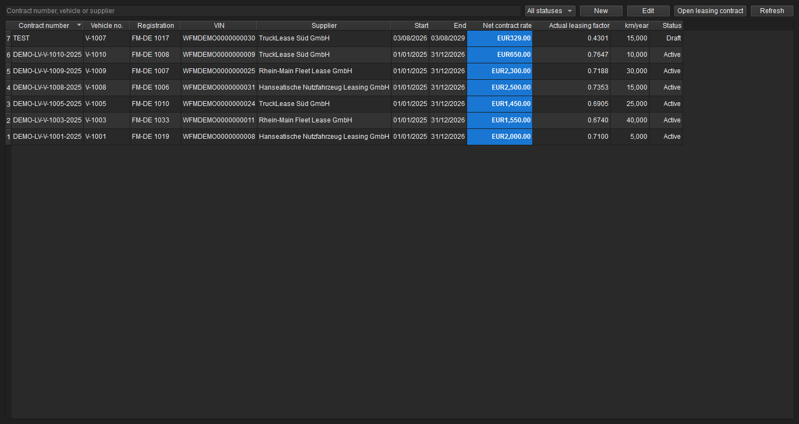
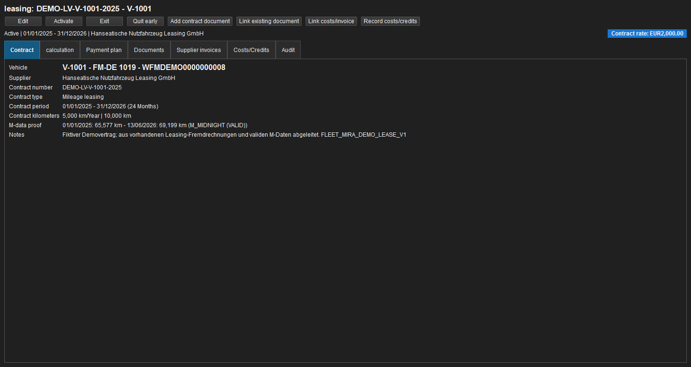
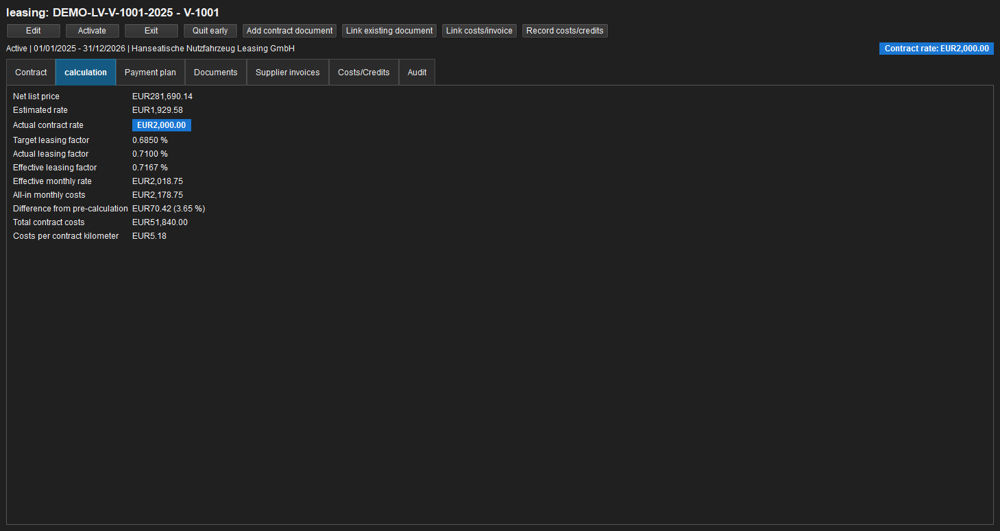

Lease contracts¶
Lease management combines contract terms, pre-calculation, payment schedule, vehicle documents and actual costs from supplier invoices. Contract management is available in every edition; reports in the Report dashboard follow its existing Pro and Enterprise licence boundary.
Creating and opening a contract¶
Open Fleet → Lease contracts. Filter the list by contract number, vehicle, supplier and status. Hovering over a contract row shows a tooltip summarising contract number, vehicle, supplier, period, term, net rate, actual factor, annual and contract mileage, and status. New creates a draft; double-click opens the dedicated Lease: contract number work tab. A vehicle record contains Lease immediately after Foreign invoices and uses the same contract tooltip. All vehicle tachograph pages are collected below Tachodata.
One contract belongs to exactly one vehicle and one supplier. It records contract number and type, dates and term, payment timing, list and acquisition values, special and final payments, residual value, mileage terms, termination details and notes. Vehicle, supplier, contract number, start, end, term, net list price and actual net lease rate are mandatory fields marked with *; list price and rate must be greater than zero even for a draft. Components distinguish recurring services from one-time charges and identify mandatory amounts included in the effective factor. Activation establishes the binding status; ended and terminated contracts are immutable.
For a new contract, vehicle and supplier initially remain empty and must be selected deliberately. Contract date and handover date default to the current date. Contract start follows the contract date; contract end and planned return are calculated from contract start and term. The first due date equals contract start. The actual return date remains empty until the vehicle is returned. Changing contract date, start or term immediately updates the dependent dates.
The vehicle selector filters as the user types by vehicle number, registration and VIN. The supplier selector searches supplier number, name and creditor number. Search input does not need to reproduce case, spaces or separators exactly; only an explicitly selected result is stored.
Creating a contract from documents¶
In addition to New, Pro and Enterprise provide From document. Document-assisted entry is a modal, transient session that can combine a contract, recurring invoice, standalone XRechnung, hybrid PDF and supplementary image documents. Originals are archived immutably with SHA-256 during the session and are excluded from backup synchronisation. No resumable intake drafts appear in the lease overview.
While OCR or worker analysis is running, the document list, status, preview and Cancel remain available; contract fields and Save are disabled. PDF and image documents open by double-click or Open in the integrated preview after another hash verification. A dedicated column identifies XRechnung documents and shows their validation status; Verify reruns KoSIT validation for the selected XML file or the embedded XML in a hybrid PDF. Analysis errors release the form for fully manual entry. Cancelling either the form or final confirmation warns before discarding everything. After confirmation, the session, analyses, reservations and local documents are removed; only the user, timestamp and discard event remain in the audit. Orphaned sessions without a heartbeat are discarded in the same way after 30 minutes.
Analysis uses valid structured XRechnung/ZUGFeRD data first, followed by embedded PDF text, local rules and OCR. Different normalised values are marked as conflicts. If a required field is missing, sources disagree or confidence is below 85 percent, the user can explicitly approve an analysis through the AI connector for each document. Azure and Vertex results only add suggestions and never silently replace a higher-priority source. Value, confidence, document and evidence location remain visible in the intake.
Suggestions populate the same lease form used for manual creation. Confident, uncertain and conflicting values are visually distinct, and every field remains editable. The review window separates conflicts, missing required values and all evidence locations. Open rows are entirely red and selected or completed rows are green; the field column sizes itself to its content. Dates, integers, currencies, percentages and tax summaries use the authenticated user's region and matching typed editors, while canonical storage remains ISO dates, cents and basis points. Conflict choices and completed required values are stored only in the active session, copied into the form and discarded completely if the intake is cancelled. Suppliers are matched primarily by VAT ID, endpoint or company identifier; vehicles by VIN and then registration. A unique result is preselected but still requires user confirmation. New: Vehicle and New: Supplier sit next to their respective selectors and open the existing prefilled master-data dialogs. Configured number sequences reserve an editable, deliberately non-reused number; without an active sequence, the number must be entered manually.
Before completion, FLEET Mira shows the contract, vehicle, supplier, period, recurring invoice, activation choice and posting mode again. All form values, new master data, contract activation and the default Post automatically mode require explicit confirmation. Contract, master data, verified recurring invoice, document links and monthly occurrences are then created in one transaction. A failure leaves no partial records, and the same completion request can be repeated idempotently. A contract without a recurring invoice remains a Draft by default. With a recurring invoice, activation and AUTO are preselected; if activation is cleared, the verified invoice remains assigned pending a later explicitly confirmed activation.

Figure: Contracts from the anonymised demo database with vehicle, supplier, term, rate and status.
Figure: Contract record with anonymised vehicle reference and M-data evidence.Leasing factor and actual rate¶
The pre-calculation follows the common vehicle-leasing comparison and is not a loan annuity:
Monthly rate = list price × leasing factor / 100
Leasing factor = monthly rate / list price × 100
The factor basis is explicitly net or gross. When a target factor is entered, FLEET Mira calculates the planned rate. If it is empty, the factor is calculated from the offer rate, or from the actual contract rate when no offer rate exists. The actual contract rate remains independently editable and is authoritative for the payment schedule and contract cost.
With net, rate and list price are compared before VAT; with gross, both include VAT. When both use the same tax rate, the factor remains practically unchanged apart from possible cent rounding because VAT cancels in the ratio. Differences can occur in particular when factor-relevant components use different tax rates. Difference from pre-calculation is the actual net contract rate minus the pre-calculated net planned rate; its percentage relates that difference to the planned rate. A positive value means that the actual rate is higher. The row appears only from an absolute difference of EUR 1.00; cent-only rounding differences are hidden. Special payments and components are excluded and instead appear in the effective factor and all-in monthly cost.
Every caption in the create/edit form and in the record tabs Contract and Calculation has a localized tooltip. In Calculation, the label and value expose the same detailed tooltip with the concrete numerical formula populated from the contract, its result, and its relevance to offer comparison, budgeting, contract control and variance analysis. Help text follows the authenticated user's language.
The actual factor compares the signed rate with list price. The effective factor spreads the special payment, final payment and mandatory factor-relevant one-time costs over the term. The all-in rate adds monthly service components and other one-time costs. This keeps offer comparison, signed terms and full cost transparent and separate.

Figure: Pre-calculation, actual contract rate, factors and full cost for the anonymised sample contract.Documents, invoices and mileage¶
Documents links contract PDFs from the vehicle's document archive. Foreign invoices and Costs/Credits show actual postings linked at cost-position level; planned payments remain separate in the schedule.
Recurring invoices and monthly posting¶
A verified supplier invoice of type Recurring invoice can be assigned from the contract's Recurring invoices tab. During the initial assignment, the user confirms the invoice, contract and posting mode. Post automatically is selected by default; Review manually presents each due period for approval instead.
The recurring invoice describes the repeating monthly supply. FLEET Mira creates stably identified occurrences with service month, due date, net, VAT and gross amounts. In automatic mode, the worker posts each complete, conflict-free due period exactly once. Overdue periods are caught up idempotently after a restart. An inactive contract, changed contract data, missing fields, total mismatch, duplicate period or unresolved variance moves the occurrence to Review required without a partial posting.
The posting mode can be changed with an effective date for future unposted periods. Posted months remain unchanged. The posting references the archived recurring invoice and service month; it does not invent monthly invoice numbers or record bank payments.
The payment schedule is versioned when a contract changes. Unchanged instalments retain their stable technical identity. In planned/actual reconciliation, zero cents is exact and up to one cent in each of net, VAT and gross is a documented rounding variance. Larger variances require a reason or correction.
Total mileage is proposed as an editable value using annual mileage × term in months / 12, commercially rounded to whole kilometres. An existing contract value is retained when the dialog opens. Changing annual mileage or term recalculates the proposal, which can then still be overwritten with a different contractual value.
The demo database contains six clearly marked fictitious contracts. Their monthly costs link to the existing leasing supplier invoices. Contract mileage is annualised from the first and last valid M_MIDNIGHT odometer readings in the evidence period and rounded to plausible 5,000-km steps. The evidence period and odometer readings remain visible in both the record and PDF.
Reports¶
The Leasing group in the Report dashboard provides:
- active lease contracts at an as-of date by vehicle;
- active contracts ending in the selected date range;
- active lease contracts at an as-of date by supplier.
All three reports start with vehicle number, registration and VIN and show contract rate, target, actual and effective factors, all-in rate and total contract cost.